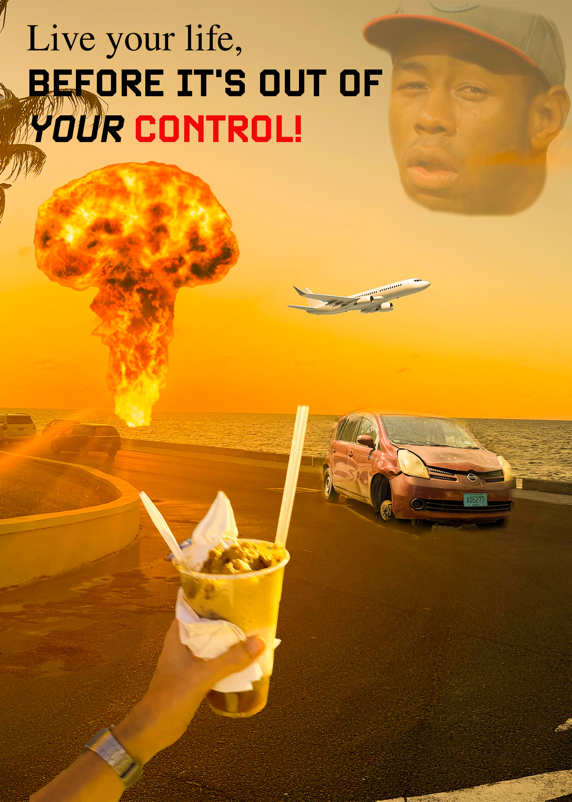

Live Your Life is a photomontage that I created that encourages going outside and living your life. No seriously, do what you want and don’t let people tell you what to do! Many people get too caught up in work, school, relationships, etc., and they don’t get the chance to really explore the world and expand their horizons.
Life is more than all the things required to survive. I have friends that find themselves depressed and overworked due to the lives they live currently and I’d love to help break their minds out of the mental prison that society puts us in. Another element to the photomontage that takes heavy prevalence is the idea that you never know when your life could turn upside down. The constant reminders of global warming, war and other potential threats constantly loom over us and some more than others. It’s almost as if they are in a competition to be the top issue we must worry about and have on the back of our minds. Just live your life and have fun while you’re able to!
The photomontage was created by using a mix of blending tools and layer masks in Photoshop. Each layer was adjusted to meet a specific need, so I auto selected certain objects in their respective images and then used a brush in order to fine tune each object’s shape. I also used an adjustment layer to add some yellow hue to the entire montage to create a warmer environment that suited my theme. I wound up using a blend on Tyler, The Creator’s face to make him appear more realistic, as the hue adjustment made him very yellow. Lastly, I added the text in the image to solidify my sentiment in the photomontage.
The images used were all either my own images or public domain, the airplane and mushroom cloud were both stock images and the rest were all taken by me. Tyler, The Creator was a screenshot I took from a video on Youtube.